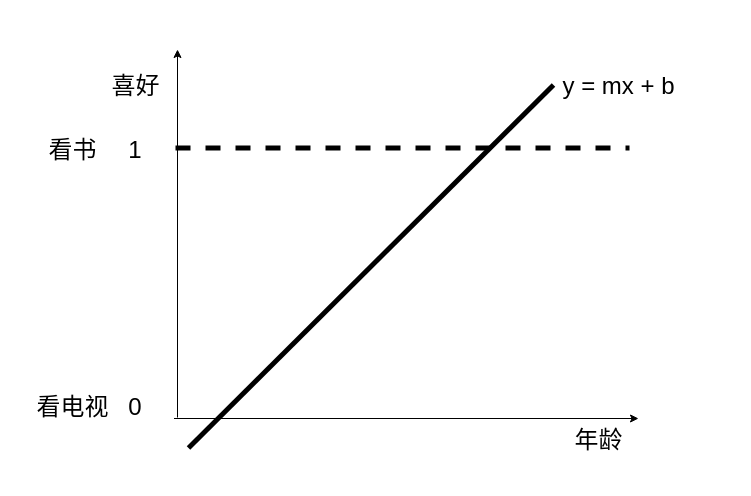
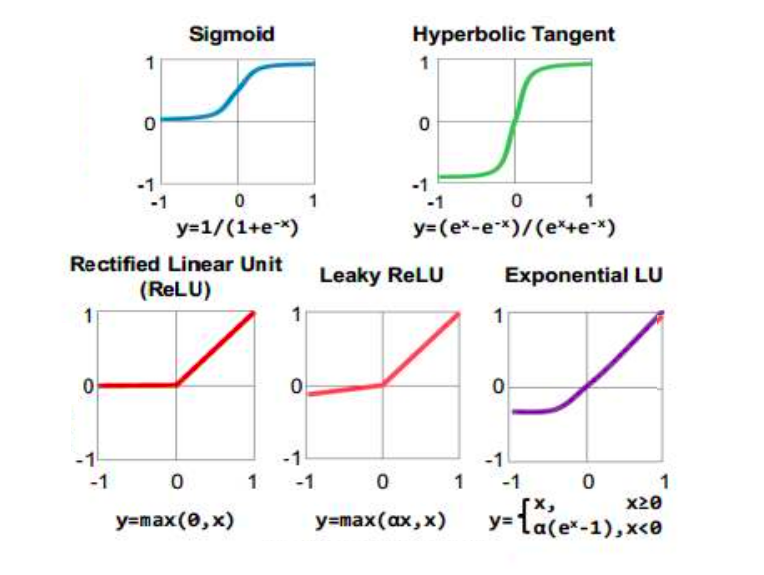
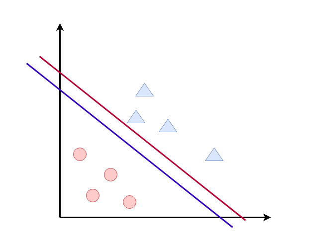
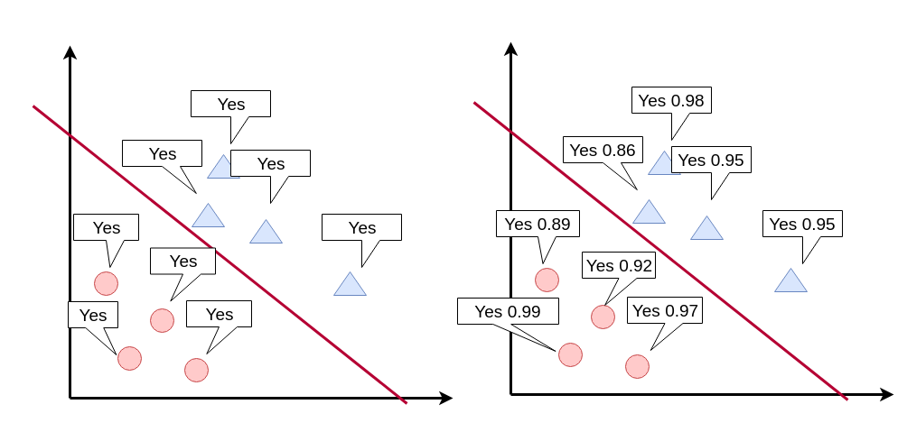

01-分类与逻辑回归¶
从感知机到逻辑回归
线性回归： 预测连续的数值
逻辑回归：对错，是否，男女等分类问题
binary classification¶
二分类
- 是否通过考试
- 安卓还是ios
- 是否是垃圾邮件
多分类
问题分析¶
根据人的年龄，判断某个人是爱看电视 还是爱看书
feature： 年龄
label：爱看书，爱看电视
机器学习就是找到一个函数，一个公式，输入是年龄，输出是爱看书（1） 还是爱看电视(0）
| 年龄 | 爱好 |
|---|---|
| 5 | 看电视 |
| 15 | 看电视 |
| 25 | 看书 |
| 35 | 看书 |
| 45 | 看书 |
数据编码¶
| 年龄 | 爱好 | 编码 |
|---|---|---|
| 5 | 看电视 | 0 |
| 15 | 看电视 | 0 |
| 25 | 看书 | 1 |
| 35 | 看书 | 1 |
| 45 | 看书 | 1 |
线性模型¶

考虑我们之前的y=mx+b的模型， 这种模型会产生一个问题， 小于0的值和大于1的值

观察， 感知机的激活函数， sigmoid的函数 可以把值压缩到0~1 之间， 我们可以用sigmod函数来对线性函数进行进一步的加工处理。
线性模型和感知机激活函数组合¶
p=\dfrac {1}{1+e^{-\left( m*age - b\right) }}
假设m = 0.57 b = -11.1
p=\dfrac {1}{1+e^{-\left( 0.57 × age - 11.1\right) }}
| 年龄 | 爱读书的概率 |
|---|---|
| 5 | 0.00002 |
| 15 | 0.07 |
| 20 | 0.58 |
| 25 | 0.96 |
| 35 | 0.9998 |
| 45 | 0.9999999 |
| 55 | 0.99999999999 |
决策边界¶
sigmoid函数出来后是一个概率， 决策边界就是多大的概率我们才认为分类成功
例如大于58% 就认为喜欢读书， 小于58%认为喜欢看电视
线性回归梯度下降步骤¶
- 随机选取一个b值
- 计算这个b值对应的mse的斜率
- 如果mse的斜率非常大，那要根据mse的斜率，去修改b的值
- mse值越大，b的修改值越大，mse斜率为正，b需要减少，mse斜率为负，b需要增加
- 选取一个很小的值，叫learningrate，学习速率，可以理解为迈开的步伐
- 用learningrate和mse的信号去更新b的值
- 重复2-6的步骤，直到mse的斜率接近于0
逻辑回归梯度下降步骤¶
- 先把分类结果编码为0和1
- 随机选取一个b值
- 计算这个b值对应的~~mse~~ 误差函数的斜率
- 如果~~mse~~ 误差函数的斜率非常大，那要根据~~mse~~ 误差函数的斜率，去修改b的值
- ~~mse~~ 误差函数值越大，b的修改值越大，~~mse~~ 误差函数 斜率为正，b需要减少， 误差函数斜率为负，b需要增加
- 选取一个很小的值，叫learningrate，学习速率，可以理解为迈开的步伐
- 用learningrate和 误差函数的信号去更新b的值
- 重复2-6的步骤，直到 误差函数的各项偏导数斜率接近于0
误差函数¶
mse：mean square error 最小平方差
mae：mean absolute error 最小绝对值差
误差函数是评估，模型好坏的一种标识

这两种误差函数在分类上面，显得无能为力， 分类的结果只有正确或者错误， 按照这种结果来说， 红色和蓝色线都是正确的分类线，都是正确的模型，但是红色更好 还是蓝色更好呢？

每种类型的数据点，离红线越远，置信概率越大，误差越小。
那么我们如何用数学的角度，定义一个公式来描述，误差函数呢？
数据准确度¶
小明： 中国足球明天出线的概率是 80%
小刚： 中国足球明天出线的概率是 50%
问：这两个模型，这两个预测哪个更准确?
如果中国队第二天出线了，小明的模型好，
如果中国队第二天没出线，小刚的模型好。